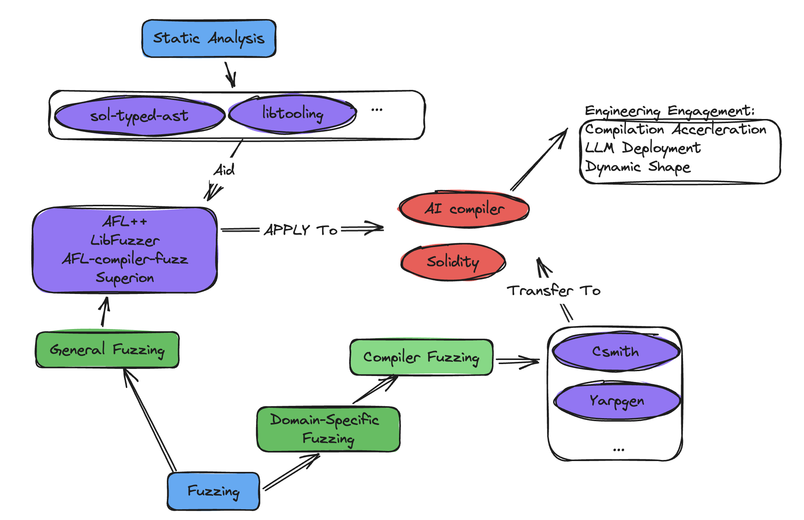

This is Haoyang Ma (马昊阳).
A PhD candidate at the Department of Computer Science and Engineering at HKUST.
I hunt bugs in open-source software, contribute code to AI frameworks and compilers, and study high-performance computing. My research focus and engineering engagement can be roughly illustrated in this figure:

You can know more about me through my resume, find me at Linkedin, Google Scholar, and GitHub, or contract me through email: haoyang.ma AT connect.ust.hk.